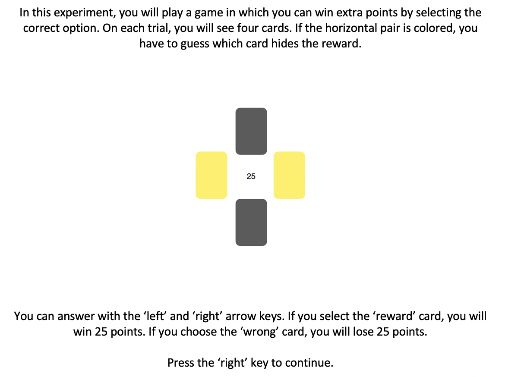
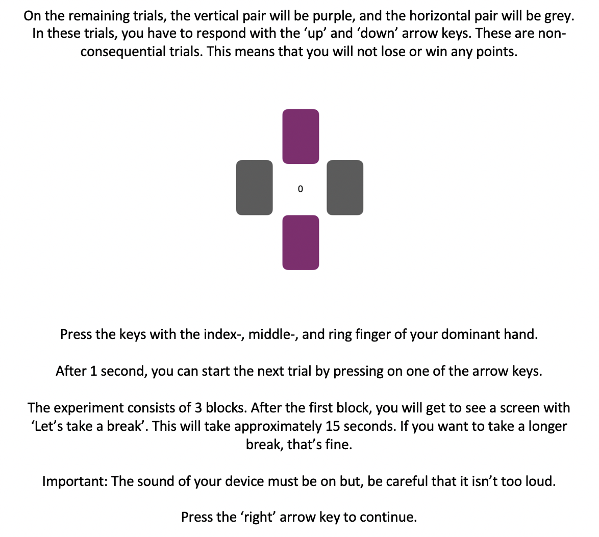

<!DOCTYPE html>
<html>
<head>
  <meta charset="utf-8"/> <!-- import the jsPsych core library, specific plugins, jquery and some custom scripts-->
  <title>Decision Making Task</title> <!-- defines a title in the browser tab -->
  <script src="jspsych-6.0.5/jspsych.js"></script> <!-- jsPsych core library -->
  <script src="jspsych-6.0.5/plugins/jspsych-instructions.js"></script> <!-- plugins define the specific tasks -->
  <script src="jspsych-6.0.5/plugins/jspsych-html-keyboard-response.js"></script>
  <script src="jspsych-6.0.5/plugins/jspsych-survey-multi-choice.js"></script>
  <script src="jspsych-6.0.5/plugins/jspsych-categorize-html.js"></script>
  <script src="jspsych-6.0.5/plugins/jspsych-survey-text-beta-6.1.js"></script> <!-- beta 6.1 version has the 'input required' function for text fields -->
  <script src="jspsych-6.0.5/plugins/jspsych-survey-multi-choice.js"></script>
  <script src="jspsych-6.0.5/plugins/jspsych-instructions.js"></script>
  <script src="jspsych-6.0.5/plugins/jspsych-audio-keyboard-response.js"></script>
  <script src="UPPSP.js"></script>
  <script src="jspsych-6.0.5/plugins/jspsych-survey-likert.js"></script>
  <script src="jspsych-6.0.5/plugins/jspsych-fullscreen.js"></script>
  <script src="js/jquery-1.7.1.min.js"></script> <!-- the jquery library is used to communicate with the server (to store the data) through "AJAX" and PHP -->
  <link href="jspsych-6.0.5/css/jspsych.css" rel="stylesheet" type="text/css"></link> <!-- jsPsych css stylesheet -->
</head>
<body></body>
<script>

/* create timeline */
var timeline = [];

// create trial_counter
var trial_ind = 1;

//create block number
var block_number = 1;

//Make arrays of images and audio
var images = ['images/instruction1.png', 'images/instruction2.png', 'images/purple0.png','images/yellow25.png', 'images/green25.png', 'images/blue25.png', 'images/orange25.png'];
var audio = ['negative.mp3', 'positive.mp3'];

// is the experiment running from a server or not? (this determines if data is saved on server or offline)
if (document.location.host) { // returns your host or null
  online = true;
} else {
  online = false;
};

/*********** prolific ID ***********/
var prolific = {
  type: 'survey-text',
  questions: [
    {prompt: "Please turn off your cell phone and other devices that might be distracting. Enter your first and last name below (your data will be anonymized the moment we approved your submission): ", required: true}],
  on_finish: function(data) {
    var responses = JSON.parse(data.responses);
    var prolific_ID = responses.Q0;
    jsPsych.data.addProperties({
      prolific_ID: prolific_ID
    });
  }
};

timeline.push(prolific);

/*********** fullscreen mode ***********/
var fullscreen_mode = {
  type: 'fullscreen',
  fullscreen_mode: true
};

timeline.push(fullscreen_mode);

// informed consent trial. The informed_consent_text variable comes from /configuration/text_variables.js
var consent = {
  type: 'instructions',
  pages: [
    'This is a research project conducted at Ghent University. '+
    'We will store your name until the approvals are made, after which the data will be fully anonymized. '+
    'The data we collect with this experiment are not linked to any other potentially identifying information like an IP address and/or identity. '+
    'These data will solely be used for research purposes. '+
    'The anonymous data from the study will be registered and archived at a trusted public data repository in order to make them available to other researchers in line with current data sharing practices. '+
    'The data will be used only for research purposes and averaged results of this study will be made openly available to the global public once the data is analyzed, but individual data will not be reported in the final publication. '+
    'You are free to stop the experiment by closing your browser window at any time. '+
    'Non-participation or withdrawal from the study will not be of any disadvantage to you. '+
    'If you require more information about this study, please contact Charlotte Eben (Lead Researcher); Email: charlotte.eben@ugent.be</p>'+
    '<p> By clicking “I want to participate”, you affirm that you: ' +
    '<p> are at least 18 years old </p>' +
    '<p> have been informed about the research objectives, the questions and the tasks that you will encounter and that you were given the opportunity to receive further information. </p>' +
    '<p> participate out of free will. </p>' +
    '<p> give informed consent to the researcher(s) to store, process, and report your anonymous data.</p>' +
    '<p> are aware of the option to stop your participation in this research at any moment without giving a reason.</p>' +
    '<p> know that participating or stopping your participation in this research has no negative consequences of any kind for you.</p>' +
    '<p> are aware of the option to ask the researcher(s) for a summary of the results after the study is finished and the results have been known.</p>' +
    '<p> agree that your anonymous data may be used for further analysis by other researchers.</p>' +
    '<p> are aware that Ghent University is the responsible entity with regards to the personal information collected during the study, and that the data protection officer can give you more information about the protection of your personal information.</p>'+
    '<p> Contact: privacy@ugent.be</p>'],
  show_clickable_nav: true,
  button_label_next: "I agree",
  allow_backward: false
};

timeline.push(consent)

// get participant's age and add it to the datafile
var age = {
  type: 'survey-text',
  questions: [{
    prompt: "How old are you?",
    required: true
  }, ],
  on_finish: function(data) {
    var responses = JSON.parse(data.responses);
    var code = responses.Q0;
    jsPsych.data.addProperties({
      age: code
    });
  }
};

 // get participant's gender and add it to the datafile
var gender = {
  type: 'survey-multi-choice',
  questions: [{
    prompt: "Select your gender",
    options: ["Male", "Female", "Non-binary", "I don't want to say"],
    required: true
  }, ],
  on_finish: function(data) {
    var responses = JSON.parse(data.responses);
    var code = responses.Q0;
    jsPsych.data.addProperties({
      gender: code
    });
  }
};

// get participant's nationality and add it to the datafile
var nationality = {
  type: 'survey-text',
  questions: [{
    prompt: "What is your nationality?",
    required: true
  }, ],
  on_finish: function(data) {
    var responses = JSON.parse(data.responses);
    var code = responses.Q0;
    jsPsych.data.addProperties({
      nationality: code
    });
  }
};

var feelings = {
  type: 'survey-multi-choice',
  questions: [{
    prompt: "How are you feeling at this moment?",
    options: ["Unhappy", "Somewhat unhappy", "Somewhat happy", "Happy"],
    required: true
  }, ],
  on_finish: function(data) {
    var responses = JSON.parse(data.responses);
    var code = responses.Q0;
    jsPsych.data.addProperties({
      feelings: code
    });
  }
};

timeline.push(age, gender, nationality, feelings)


var instruction = {
     type: 'instructions',
     pages: [
     '</img>',
     '</img>'
     ]
 };

//timeline.push(preload) -> doesn't work $
timeline.push(instruction)

var posvalence = {
    type: 'audio-keyboard-response',
    stimulus: 'positive.mp3',
    trial_duration: 15000, // CE: I thought we said 10 seconds?
    choices: jsPsych.NO_KEYS,
    prompt: "<p>Let's take a little break.</p>",
    trial_ends_after_audio: true,
};

//negative valence
var negvalence = {
    type: 'audio-keyboard-response',
    stimulus: 'negative.mp3',
    trial_duration: 15000, //CE: as above
    choices: jsPsych.NO_KEYS,
    prompt: "<p>Let's take a little break.</p>",
    response_ends_trial: false
};

// create factorial design
var factors = {
    amountPure: [25],
    outcome: ['nonGamble', 'gambleWin', 'gambleLoss'],
    color: ['yellow', 'green', 'blue', 'orange']
};
var full_design = jsPsych.randomization.factorial(factors, 1); //CE: todo: add no. of repetitions

// display stimuli depending on the design
for (var i = 0; i < full_design.length; i++) {
  if (full_design[i].outcome == 'nonGamble') {
    full_design[i].promptGamble = 0;
    full_design[i].amount = 0;
    full_design[i].image = "</img>";
  } else if (full_design[i].outcome == 'gambleWin' && full_design[i].color == 'yellow' && full_design[i].amountPure == 25) {
    full_design[i].amount = '+' + full_design[i].amountPure;
    full_design[i].image = "</img>";
  } else if (full_design[i].outcome == 'gambleWin' && full_design[i].color == 'green' && full_design[i].amountPure == 25) {
    full_design[i].amount = '+' + full_design[i].amountPure;
    full_design[i].image = "</img>";
  } else if (full_design[i].outcome == 'gambleWin' && full_design[i].color == 'blue' && full_design[i].amountPure == 25) {
    full_design[i].amount = '+' + full_design[i].amountPure;
    full_design[i].image = "</img>";
  } else if (full_design[i].outcome == 'gambleWin' && full_design[i].color == 'orange' && full_design[i].amountPure == 25) {
    full_design[i].amount = '+' + full_design[i].amountPure;
    full_design[i].image = "</img>";
  } else if (full_design[i].outcome == 'gambleLoss' && full_design[i].color == 'yellow' && full_design[i].amountPure == 25) {
    full_design[i].amount = '-' + full_design[i].amountPure;
    full_design[i].image = "</img>";
  } else if (full_design[i].outcome == 'gambleLoss' && full_design[i].color == 'green' && full_design[i].amountPure == 25) {
    full_design[i].amount = '-' + full_design[i].amountPure;
    full_design[i].image = "</img>";
  } else if (full_design[i].outcome == 'gambleLoss' && full_design[i].color == 'orange' && full_design[i].amountPure == 25) {
    full_design[i].amount = '-' + full_design[i].amountPure;
    full_design[i].image = "</img>";
  } else if (full_design[i].outcome == 'gambleLoss' && full_design[i].color == 'blue' && full_design[i].amountPure == 25) {
    full_design[i].amount = '-' + full_design[i].amountPure;
    full_design[i].image = "</img>";
  }
};

var start = {
  type: 'html-keyboard-response',
  stimulus: 'Press one of the arrow keys to start the next gamble',
  choices: ['leftarrow', 'rightarrow', 'downarrow', 'uparrow'],
};


// displaying cards; Data is logged
var cards = {
  type: "html-keyboard-response",
  stimulus: function(){return jsPsych.timelineVariable('image', true)},
  choices: function(){
    if (jsPsych.timelineVariable('outcome', true) == 'nonGamble'){
      return ['downarrow', 'uparrow'];
    } else {
      return ['leftarrow', 'rightarrow'];
    }
  },
  on_finish: function(data) {
    var last_rt = jsPsych.data.get().last(2).values()[0];
    data.startRT = last_rt.rt;
    startRT = data.startRT;
    console.log(startRT);
    responseTime = data.rt;
    console.log(responseTime);
    data.outcome = jsPsych.timelineVariable('outcome', true);
    data.amount = jsPsych.timelineVariable('amountPure', true);
    data.trial_type = 'task';
    data.trial_ind = trial_ind; // register trial number
    data.block_number = block_number //register block number
  }
};

var feedback = {
  type: "html-keyboard-response",
  stimulus: function () {
    return jsPsych.timelineVariable('amount', true)},
  trial_duration: 1000,
  choices: jsPsych.NO_KEYS,
  on_finish: function(data){
    trial_ind = trial_ind + 1; // now add one to the trial number
  }
};

//No music block
var block1 = {
  timeline: [start, cards, feedback], //Preload -> doesn't work $
  timeline_variables: full_design,
  on_finish: function(data){
    block_number = block_number; // now add one to the trial number
  }
};
timeline.push(block1) // 

//Positive valence block
var posblock = {
  timeline: [posvalence, feelings],
};
timeline.push(posblock)

var block2 = {
  timeline: [start, cards, feedback],
  timeline_variables: full_design,
  on_finish: function(data){
  block_number = block_number + 1; // now add one to the block number )CE: like this you can change around blocks in ther version without worrying that you record the wrong block_number
  }
};
timeline.push(block2)

//Negative valence block
var negblock = {
  timeline: [negvalence, feelings],
};

timeline.push(negblock)

var block3 = {
  timeline: [start, cards, feedback],
  timeline_variables: full_design,
  on_finish: function(data){
    block_number = block_number + 1; // now add one to the block number
  }
};
timeline.push(block3)

// create block feedback
var block_feedback = {
  type: 'html-keyboard-response',
  stimulus: 'Thanks for your participation. You won 200 points.',
};

timeline.push(block_feedback)

/*********** UPPS-P questionnaire ***********/
var instructions_UPPSP = {
  type: 'instructions',
  pages: [
    'In the last part of this study, you will see a number of statements that describe ways in which people think and act. For each statement, please indicate how much you agree or disagree with the statement by selecting Agree Strongly, Agree Somewhat, Disagree Somewhat or Disagree Strongly. Be sure to indicate your agreement or disagreement for every statement. Press the arrow key to start the task.'
  ],
  key_forward: 'rightarrow',
  on_start: function() {
    document.body.style.cursor = 'auto'; // show the mouse cursor
  }
};

timeline.push(instructions_UPPSP);

// show UPPSP questionnaire
timeline.push(...UPPSP_items);


// function that appends data to an existing file (or creates the file if it does not exist)
function appendData(filename, filedata) {
  $.ajax({ // make sure jquery-1.7.1.min.js is loaded in the html header for this to work
    type: 'post',
    cache: false,
    url: 'php/save_data_append.php', // IMPORTANT: change the php script to link to the directory of your server where you want to store the data!
    data: {
      filename: filename,
      filedata: filedata
    },
  });
};

var final_debrief = { 
  type: 'html-keyboard-response',
  stimulus:"<p> Thank you for participating! In this study we want to look at the influence of emotions on impulsive actions.</p>" +
    "<p>More specifically, we will look at how fast you started the next trial after a loss versus a win. </p>" +
    "<p>The music tried to influence your mood to see if you will be more impulsive in a happy mood or in a sad mood. </p>" +
    "<p>The assumption that is made is that a negative mood will increase impulsive actions more than when one is happy. </p>" +
    "<p>If you have any questions, you can contact the researcher at nathalie.dusart@ugent.be.</p>"
};

timeline.push(final_debrief);


// function to add participant info and trial no. to data file
  /* #########################################################################
  the functions that save the data and initiates the experiment
  ######################################################################### */

  /* start the experiment and save data*/
jsPsych.init({
  timeline: timeline,
  preload_images: images,
  preload_audio: audio,
  on_data_update: function(data){
    if (online){
      var subjID = jsPsych.data.get().last(1).values()[0]['prolific_ID'];
      if (data.trial_index == 1){ // write header at first event
        data_row = "prolific_ID,Age,Gender,Nationality,Feelings,stimulus,block_number,trial_number,outcome,amount,startRT,RT,key_press,resp,factor,color,time_elapsed\n" //CE: the valence data is missing
        appendData('CardsData_'+ subjID +'.csv',data_row)
      } else if (data.trial_type == 'task' || data.trial_type == 'survey-likert'){ // append data each stimulus when a categorize-html occurs
        data_row = data.prolific_ID + ',' + data.age + ',' + data.gender + ',' + data.nationality + ',' + data.feelings + ','+ data.stimulus + ',' + data.block_number + ',' + data.trial_ind + ',' +
                      data.outcome + ',' + data.amount + ',' +
                      data.startRT + ','  + data.rt + ',' + data.key_press + ',' + data.resp + ',' + data.factor + ',' + data.color + ',' + data.time_elapsed  + '\n'
        appendData('CardsData_'+ subjID +'.csv',data_row)
      }
    }
  },
  on_finish: function() {
      if (!online){
        jsPsych.data.get().filter({trial_type: 'task' || trial_type == 'survey-likert'}).localSave('csv','mydata.csv');
      }
  }
})

</script>
</html>
